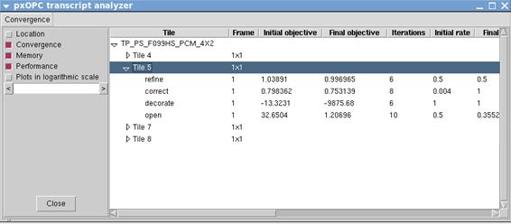

The pxOPC transcript analyzer is available
in the Calibre® DESIGNrev™, Calibre® MDPview™,
Calibre LITHOview, and Calibre WORKbench viewers. It calls Gnuplot
to display graphs of the rate and objective.
Restrictions and Limitations
Procedure
- In the
Calibre viewer, select .
- Use the
file browser to select the log file from the Calibre pxOPC run.
The file browser automatically filters on .transcript.
If you do not see your log file, change the “Files of type” setting.
If the pxOPC Transcript Analyzer window does not show
any data in the Convergence tab, the run
was either from an incompatible version of Calibre or was done without
debug_level 1 being set.
- Expand
one of the tile listings to show the job entries. (See Figure 1.) Each entry lists the
job name, final objective, and final rate.
Figure 1. Calibre
pxOPC Transcript Analyzer
The data shown depends on your selections to the left. The Convergence
option includes the initial and final rate, which can be useful
for tuning recipes. If the recipe includes any check keywords, the
Convergence option also displays whether the checks found any violations.
- To plot
the data, select a job entry and right-click.
For steeply changing plots, select the “Plots in logarithmic
scale” option on the left and plot again. You can have multiple
plot views open at the same time.
You can zoom into sections of the plot by dragging with the left
mouse button over a section. Go back to the previous view by typing
“u” in the plot window. “p” and “n” go forward and back through
the view history.
Results
The plots of the rate and objective help you find convergence
problems and tune your run.
If either
rate or objective do not flatten at the end of the graph, try adding
more iterations to the job.
If the objective
rises, it means the settings are preventing the job from converging
on a solution. Try decreasing the rate or loosening some constraints.